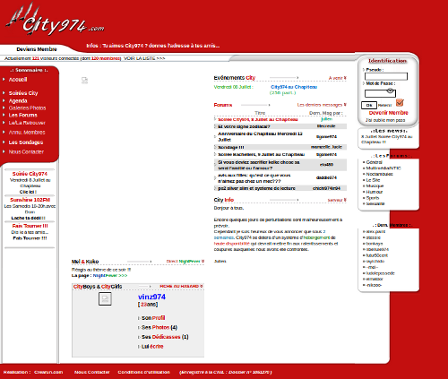
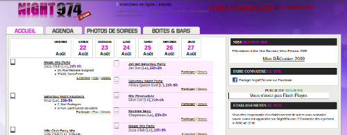

Il y a cinq ans, naissait City974, un nouveau forum où on pouvait discuter entre réunionnais. Très vite le site s’est développé au rhytme des venues et des développements de son créateur Julien Rochefeuille. Aujourd’hui, on y retrouve des sondages, des albums photos et la liste des membres pour chercher de nouvelles personnes avec qui discuter. Il y a aussi un agenda où les soirées city974 figurent en bonne place parce que c’est bien beau de se rencontrer en ligne mais au bout d’un moment on a envie de sortir ensemble. Les soirées City974 sont nées de ce besoin et puis aussi parce que La Réunion aime le clubing... jusqu’à Paris où le Barachois, seul lieu parisien à faire dans le Séga et le Maloya.

L’équipe de City974 ne reste pas qu’en ligne mais elle s’étend aussi sur la toile, après la création de Regie 974, créée pour gérer les espaces publicitaires de City974, voici le dernier venu de la galaxie : Night974. Comme son nom l’indique, Night974 s’occupe de vos sortie Réunionnaises. Les soirées City bien évidemment mais aussi les autres soirées, dans les boites comme le Duplex ou le Zaza club, au Chapiteau ou à la Villa club. Les bars, les boites y sont listées aux coté de l’agenda de la semaine et biensûr, les inévitables photos des soirées précédentes. Amis clubers, si vous voulez sortir à la Réunion, vous savez maintenant où aller.
Les deux sites présentés ici ont maintenant disparu, leur utilisateurs ayant décidé d'utiliser les réseaux sociaux et les applications mobile de rencontre.